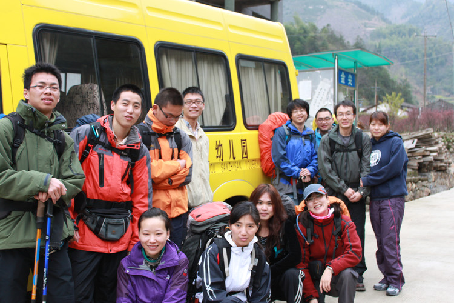

[转寄/推荐][转贴][删除][修改][设置可RE属性][上一篇][返回讨论区][下一篇][回文章][同主题列表][同主题阅读][从这里展开]
发信人: DongShiBa (东18|木木彡|F0502004|5050209*), 信区: outdoor
标 题: 清明金紫尖纪实
发信站: 饮水思源 (2010年04月08日21:29:18 星期四)
清明组团去了淳安金紫尖，一辆16座依维柯，成行13人，成员学生、民工对半，分别来自
交大、复旦、浙大、华科大、二军大，包车+路费+腐败人均270，略高。
去金紫尖的路上就不是很顺利，7点半从上海出发，杭千高速上行至“千岛湖、淳安”出口
时，发现高速公路指示牌是暗的，司机武断地决定继续往前开，开了15分钟后发现走错了
，只好在下一出口掉头，来回浪费了半个小时。这个时候向导的手机关机了，只有靠自己
了。杭千高速公路下车后进入淳安县城，收费口问一下“千岛湖大桥”即可，淳安县城内
行驶约45分钟，可以上千岛湖大桥。下大桥之后根据路牌在一小的十字路口往右向“左口
”方向开。往“左口”那条路路牌会提示22：00-6：00禁止通行，无视之，路况很好的。
之后基本没有岔路，沿路牌往“左口”开就对了。这段山路很长，不过都是水泥路，夜间
路况也不错，行驶约1.5小时，到达一岔路口，可以看到“新田村”的路牌，这时往右边那
条路走，不用半个小时就可以到达金尖村。我们到达金尖村的时间是凌晨3点。
我们找的向导是复旦版上推荐的方木春，感觉不是很厚道，两只鸡要了我们200多块。大家
要去可以再打听打听别的向导。
第二天方木春给我们找了一个向导上山，据说是一条新路，大家都跃跃欲试。一开始是土
路，后来有乱石路，LiYang说牯牛降就是这种路，大家刚刚有点high的时候，到营地了。
。。此时才下午1点。之后和LiYang跟向导去看第二天冲顶的路，碰到几个人在做饭，他们
说打算开发金紫尖了。在和这几个人聊天的时候我发现还有两条上山的路，他们说其中一
条路挺刺激，沿途能看到瀑布，我们上来走的那条路是新开的，什么都看不到。当时感觉
有点遗憾，建议后面去的朋友和向导说要走刺激的、能看到瀑布的那条路。那几个人给我
留了个联系方式 余伟金 15068789399；胡新田 13968107309.大家可以试一下。之前方木
春的电话是13575780811.
第二天从营地出发，经过昨天探路经过的那个路口继续往上。冲顶那段路非常惊险，我们
轻装也只上去了6个人。当天雾太大，否则能看到远处的千岛湖。
冲顶下来之后未做休整直接开始下山，一路的碎石路，而且石头也不稳，有队友被后面人
踩下来的石头砸到了，幸好没什么事。山脚下油菜花很灿烂，人均肯定比婺源多，呵呵。
到达方家已经是4点多了。五点半出发，回来时候在杭州送了一下浙大的同学，于凌晨1点
到达上海。如此计算，从上海直达金尖村起码需要6.5个小时。
金紫尖五一就要搞活动，村子里会购买帐篷等登山装备。而且大家如果没有冲顶观日出的
冲动的话，完全可以一天上下。
总体感觉 金紫尖还是值得一去 要挑个好天气~
上几张pic
1、史上最黄最暴力幼儿园整装待发
 screen.width - 200){this.width = screen.width - 200}">
|


[转寄/推荐][转贴][删除][修改][设置可RE属性][上一篇][返回讨论区][下一篇][回文章][同主题列表][同主题阅读][从这里展开]